I rented the green quonset hut from old man. his name was Llyod B. He was the insurance guy. The address was 216 19th Ave SW. It has many windows on the side. and nice front end. It was about summer of 1994 that I did rented it and filled with my bed frames, scrap metals, and other junk. I build some art works and sold few of them. The Mayo House sculpture was built there out on front yard.
The sad story here: Llyod died in a hospital for some reason I forgot. I have to move to other place, because it have to be torn down. I really loved this building. I knew I was taking a lot of pics and measurements. It was about July of 1996 that I have to move out of there. I did saved all of the doors and some windows. the new place was loading docks and two garages. that is it. The new owner bought it all and kicked me out. I moved again to my landlord's basement.
Someday, I will buy a farm and build few quonset huts. I will make sure that I am away from a city. I do not think fucking government should control what people do on their private properties out of city limits.
Here are my pictures of my old house 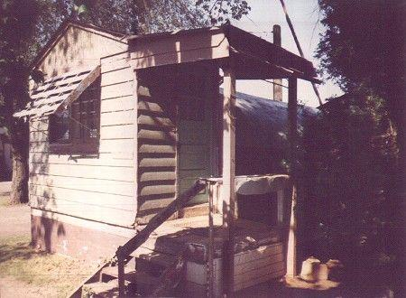
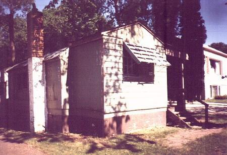
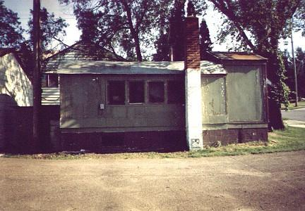
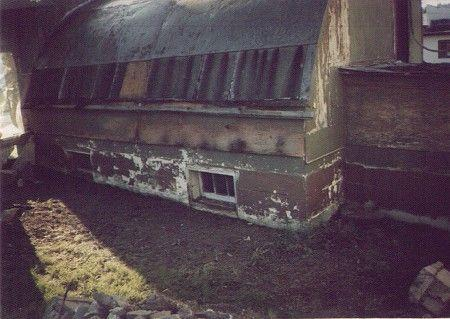
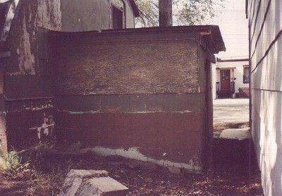
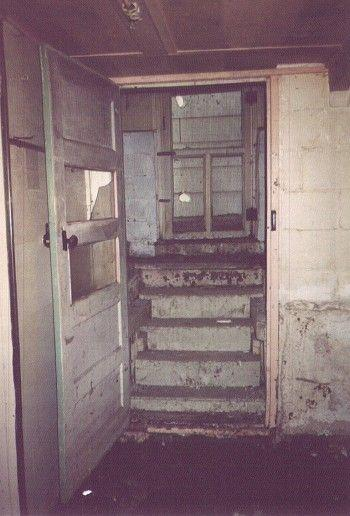
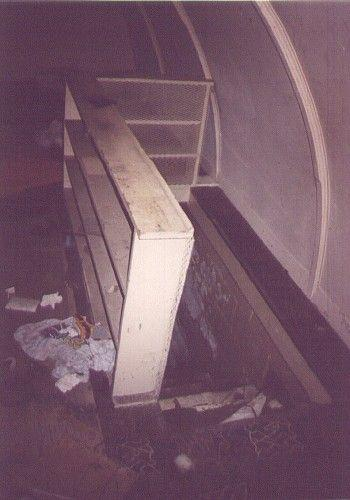

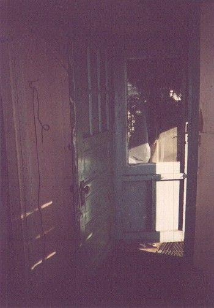
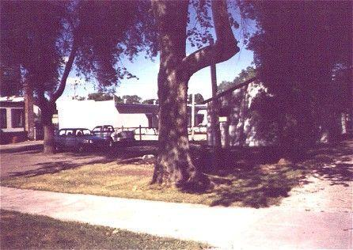
Gone --- Sad :o(((
Update:
I was looking at the address again in Google Earth to see if there is anything new with this site.
Guess what, I saw new shed building there.

I wonder if Llyod's son still own this piece of property or He have sold it to someone else.
Other Quonset huts :o)
Cool Quonset Hut Riding :o)
Quonset huts at fairground before they were torn down for new buildings
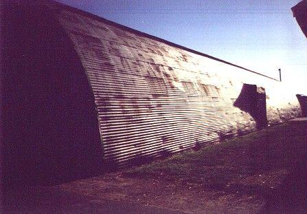
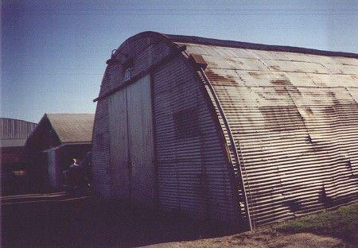

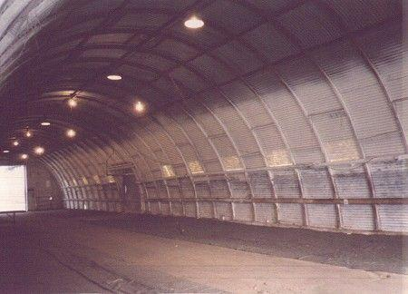
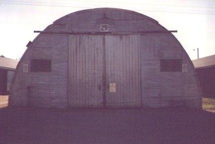
Pics of other Quonset huts
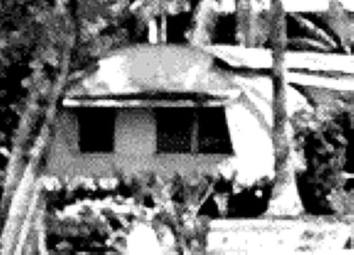this look like my old house
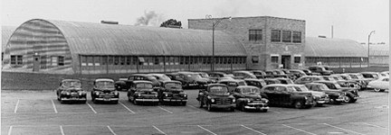
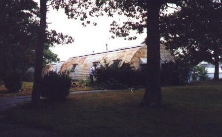